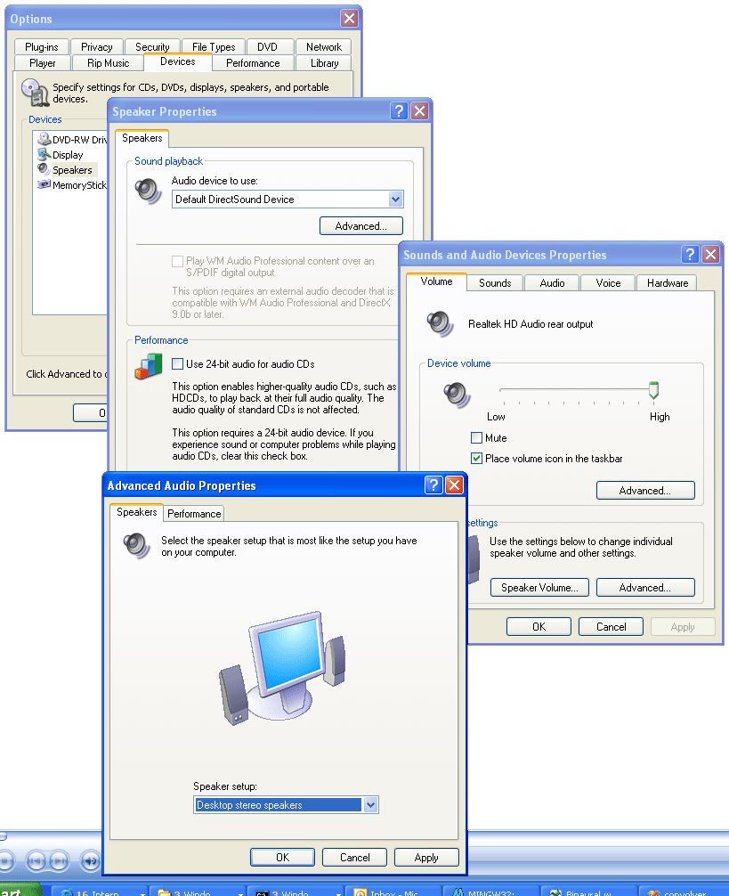

|
| |
Troubleshooting
Installation
- If on installation you get a message to the effect that convolverWMP.dll
failed to register, check that you have Windows Media Player 9 or 10 installed.
Loading ConvolverFilter / ConvolverWrapper
- These filters will not (yet) load with Sony applications such as AcidPro
as these require certain Sony-specific interfaces for displaying property pages
to be implemented.
Config files
- Make sure that you are using the latest version of Convolver. The
format of the config files has changed a couple of times to accommodate new
features.
Playback
- If ConvolverWMP is not engaged, that is if you don't get a little logo in
the bar at the bottom of Windows Media Player during playback
and (so) you don't hear any effect, check that the filter sample rate (eg, 44.1kHz)
is the same as the sample rate of the filter that you have selected. Similarly for
the number of input and output channels (eg, stereo to stereo). You can select
the number of speakers from Windows Media Player | Tools |Options:

Note that after you change the filter/config in ConvolverWMP following such a
mismatch, you may need to restart Windows Media Player to get it to retest ConvolverWMP's
compatibility with your playback setup (otherwise it may continue to assume that
ConvolverWMP is not applicable to the playback stream).
- If ConvolverWMP is engaged, and you don't hear anything, try increasing
the attenuation on the ConvolverWMP dialog. Start with the calculated
optimum value.
- If you still don't hear anything, check your drivers. For example, Sound
Blaster Live! 5.1, DR release 1.3.0 (according to Soundblaster auto update),
actual driver version 5.12.2.252, produces silence when used with 32-bit audio.
Use the MME drivers instead.
- If, after playing music of one format (sample rate, channels) you change
the filter to one with a different sample rate or a different number of input
or output channels, ConvolverWMP will issue a warning. You will need to select
music of the right format before Windows Media Player will play. Indeed
you may also need to restart Windows Media Player.
- Convolution, by its nature, generates a lag between the input and output.
ConvolverWrapper and ConvolverFilter will, therefore, generate only silence
until that lag (half the partition length) has passed. You may also need
to add some silence at the end of the input if you want all the valid input
to be processed when by ConvolverWrapper and ConvolverFilter.
ConvolverWrapper
ConvolverWrapper sets the output sample format type to be identical to the input
sample format type. ConvolverWMP (Convolver DSP plug-in) and ConvolverFilter
negotiate input and output format types independently.
- Check that your system meets the
requirements set out at the bottom of the main page.
- Confirm that perftest runs from your
installation directory (normally
C:\Program Files\Convolver\Convolver) using an impulse response file (filter, audio file) of your choice (in this example Orwellian Assembly Hall.wav)
C:\Program Files\convolver\convolver>perftest 8 2 1 "Orwellian Assembly Hall.wav"
2 Paths (Stereo to Stereo direct) 44.1kHz 50544 taps Lag: 25272 taps 0.57s Estimated gain: 30dB Peak gain: 70dB
2 Paths (Stereo to Stereo direct) 44.1kHz 50544 taps Lag: 25272 taps 0.57s Estimated gain: 30dB Peak gain: 70dB
Partitions Rate SecCalc SecLoad Attenuation Filter Length Partition Length Iteration
0 53.8 0.213 0.168 -37.6 50544 50544 1
0 53.8 0.213 0.167 -38.2 50544 50544 2
1 50.8 0.225 0.163 -38.2 50544 50544 1
1 52.7 0.218 0.17 -38.2 50544 50544 2
2 51.9 0.221 0.17 -38.3 50544 25272 1
2 53.6 0.214 0.178 -38.3 50544 25272 2
3 57.4 0.2 0.163 -38.1 50544 16848 1
3 55.7 0.206 0.165 -38.1 50544 16848 2
4 46.3 0.247 0.161 -37.8 50544 12636 1
4 50.1 0.229 0.222 -38.4 50544 12636 2
5 53.2 0.217 0.166 -38.2 50960 10192 1
5 52.4 0.22 0.161 -38.1 50960 10192 2
6 51.4 0.223 0.161 -38.7 50544 8424 1
6 52.3 0.219 0.164 -37.5 50544 8424 2
7 51.6 0.224 0.162 -37.5 50960 7280 1
7 51.4 0.225 0.172 -37.5 50960 7280 2
8 42.1 0.272 0.172 -37.8 50544 6318 1
8 40.7 0.282 0.161 -37.8 50544 6318 2
Total load time: 3.05s
Total execution time: 4.07s
- If you are running convolverVST, check that perftest runs from outside
the installation directory. This will require your installation
directory to be in your PATH. See the convolverVST
page for instructions on setting your PATH.
- Verify that ConvolverWMP (DSP plug-in) runs in Windows Media Player
9/10. See the usage page for instructions,
and the tips above.
- If you are getting strange noises, verify that ConvolverFilter runs from
Media Player Classic and make a note of the input and output formats being
used. (See the usage page for instructions. After selecting a file for playback (Ctrl-O), select Play | Filter | ConvolverFilter | Pin Info.)
- If you have more than one soundcard (or built-in sound and a soundcard)
try updating the drivers and/or using the other sound output device on your
system.
- Report the problem using the instructions on the
feedback page.
|